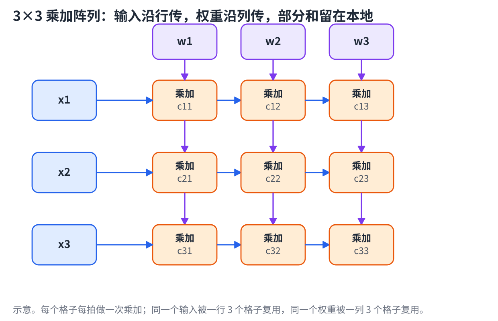
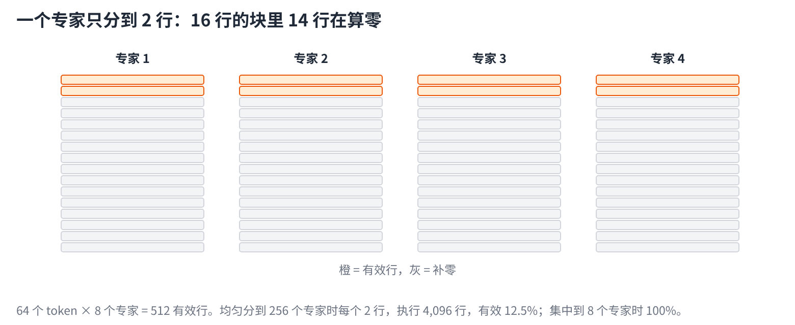
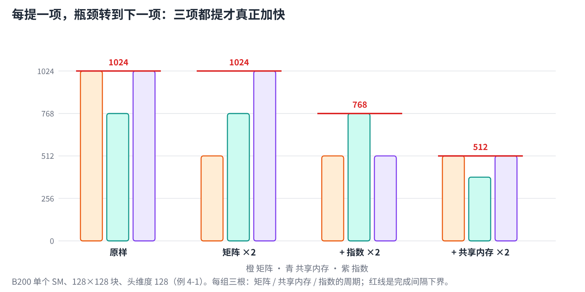
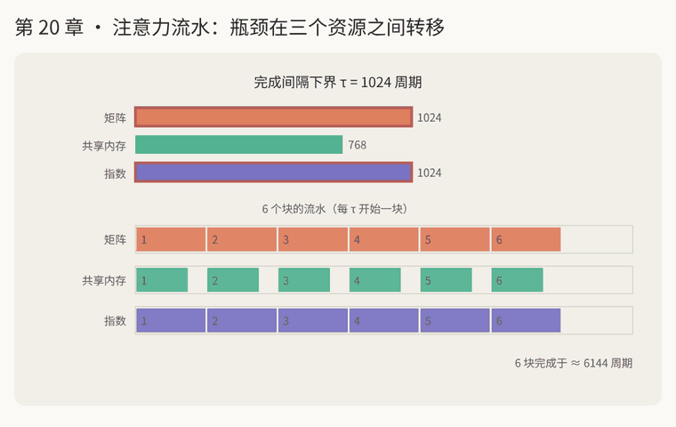

第 20 章 · 计算单元：矩阵、向量、流水与低精度
本地运行
git clone https://github.com/wikieden/ai-infra-from-constraints
cd ai-infra-from-constraints/code/notebooks
pip install jupyterlab torch numpy
jupyter lab ch20_compute_units.ipynb也可以下载后直接用 VS Code 打开 .ipynb 运行。需要 GPU 的章节在 Colab 里选「代码执行程序 → 更改运行时类型 → GPU」。
本章回答：矩阵单元为什么适合神经网络，又为什么怕"行数太少"？Softmax、RoPE 这些向量工作慢在哪？注意力的 QK → Softmax → PV 怎么在矩阵单元和向量单元之间流水，瓶颈会怎么转移？低精度省了多少字节，又多了什么工作？
讲解日期：2026-11-24 · 上一章：第 19 章 从矩阵乘法认识加速器 · 下一章：第 21 章 存储层次与数据搬移
对应原文：materials/ai-infra-book/manuscripts/04-加速器架构.md§4.2 L223–L370（例 4-1、图 4-8 到 4-12）
本章缩写：FP4 / FP8 = 4 / 8 位浮点 · GEMM = GEneral Matrix Multiply（通用 / 矩阵 / 乘）· GEMV = GEneral Matrix-Vector multiply（通用 / 矩阵 / 向量乘）· INT8 = 8-bit Integer（8 位 / 整数）· RoPE = Rotary Position Embedding（旋转 / 位置 / 编码）· SIMD = Single Instruction, Multiple Data（单 / 指令 / 多 / 数据）· SIMT = Single Instruction, Multiple Threads（单 / 指令 / 多 / 线程）· SM = Streaming Multiprocessor（流式 / 多处理器）。全部缩写见 缩写与术语表
Transformer 一层里交替着两类计算：大量规则乘加（投影、QK、PV），以及逐元素运算、特殊函数和归约（归一化、RoPE、Softmax、门控激活）。硬件也就分成矩阵单元和向量单元，中间靠搬移和同步交接。
讲解
第一步：矩阵单元：一块数据在阵列里被用很多次（2026-11-24）
类比：流水线上传递零件。 一排工人每人拿到一个零件，加工一下再传给旁边的人；每个零件经过一整排人，被用了很多次，却只从仓库领了一次。
原文 L233–L239：算一个 \(m \times n\) 输出块时，同一行输入参与 \(n\) 个输出，同一列权重参与 \(m\) 个输出。矩阵单元让乘加单元共享操作数：数据在相邻单元间传递，部分和留在本地更新；一条指令描述一整块工作，控制开销被大量运算分摊。
例子（原文 L239）：一次 \(16 \times 16 \times 16\) 的矩阵操作，两个输入块各 256 个元素，完成 \(2 \times 16^3 = 8192\) 次浮点运算，每个输入元素在块内参与 16 次乘法。

图 20-1 · 用小阵列看操作数复用。真实的矩阵单元按固定的块形状执行。
怕行数太少（原文 L243–L251）：矩阵指令按固定块（\(m_t \times n_t \times k_t\)）执行，不足一块的部分补零。有效运算比例：
例子（原文 L249–L251，第 11 章的 MoE 场景）：64 个 token 各选 8 个专家，共 512 个有效行，行方向按 16 补齐：
| 分派 | 每个专家几行 | 实际执行的行 | 有效比例 |
|---|---|---|---|
| 均匀到 256 个专家 | 2 | \(256 \times 16 = 4096\) | 12.5% |
| 集中到 8 个专家 | 64 | \(8 \times 64 = 512\) | 100% |
有效计算一样，前一种的执行量是后一种的 8 倍。多加乘加器，会同样加快补零的无用功；要减少补零，就得改变每个专家的行数，或换更小的计算块（比如单行用 GEMV）。

图 20-2 · 浅灰是补零。库为不同形状准备多种 kernel，原因就在这里。
一句话：矩阵单元靠块内复用提高吞吐，但按固定块执行，行数太少时大量算力花在补零上。
第二步：向量工作：逐元素的可以并行，归约要一轮轮等（2026-11-24）
类比：比赛选冠军。 每个选手各自热身（逐元素）可以同时进行；选冠军要两两比赛，一轮淘汰一半，轮数省不掉。
Softmax（原文 L274）：一行 \(n\) 个分数，
\(n = 128\)：128 个指数可以并行；求最大值和求和是归约，理想二叉归约要 \(\log_2 128 = 7\) 轮，每轮等上一轮。
RoPE（原文 L284–L287）：一对分量的旋转
Qwen3-8B 一层 32 个 Q 头 + 8 个 K 头，每头 128 维 = 64 对：\((32 + 8) \times 64 = 2560\) 对，每对 4 次乘 + 2 次加减 = 6 FLOPs，每个 token 15,360 FLOPs。系数只随位置变，可以预先算好：1024 个位置 × 64 个 cos + 64 个 sin × BF16 = 256 KiB。
分工（原文 L279）：向量单元做逐元素和归约，特殊函数单元算指数，控制逻辑管循环、地址、分支和同步。昇腾 950 的一个 AI 子系统是 1 个 Cube Core + 2 个 Vector Core，向量部分以 SIMD 为主、SIMT 为辅。
矩阵单元越快，向量工作在总时间里占比越大（原文 L289），资源配比就越需要调整（第 19 章的 Amdahl）。
一句话：逐元素运算可以并行，归约要一轮轮合并；矩阵单元越快，向量工作和操作数供给越容易成为瓶颈。
第三步：注意力流水：瓶颈在三个资源之间转移（2026-11-24）
类比：一条三工位的流水线：切菜、炒菜、装盘。 一盘菜要依次过三个工位，但多盘菜可以错开同时进行；稳定以后，每隔多久出一盘菜，由最慢的那个工位决定。
原文 L293–L311：同一组查询行，\(Z = QK^{\mathsf T}\) → \(P = \mathrm{Softmax}(Z)\) → \(O = PV\) 依次执行；分成多组后，矩阵单元算下一组的 QK，向量单元同时做上一组的 Softmax。
例子（原文 L305，FlashAttention-4 对 B200 单个 SM 的分析）：\(128 \times 128\) 的块，头维度 128。
| 资源 | 工作量 | 速率（每 SM 每周期） | 周期 |
|---|---|---|---|
| 矩阵（QK + PV） | 约 8.39 MFLOPs | 8192 FLOPs | 1024 |
| 指数 | 16,384 个 | 16 个 | 1024 |
| 共享内存读操作数 | 96 KiB | 128 bytes | 768 |
公式（原文 L310）：
例 4-1（原文 L317–L325）：
| 配置 | 三项（周期） | 相邻块完成间隔下界 |
|---|---|---|
| 原样 | 1024、768、1024 | 1024 |
| 矩阵 ×2 | 512、768、1024 | 1024（没变！） |
| 矩阵 ×2、指数 ×2 | 512、768、512 | 768（共享内存成了瓶颈） |
| 再加共享内存 ×2 | 512、384、512 | 512 |

图 20-3 · 只加矩阵算力，指数单元仍然拖后腿；三项都提才能真正加快。要达到这个间隔，片上还得同时放下几块不同进度的数据（第 21 章）。
补基础：FlashAttention 的分块与在线 Softmax 见《CUDA 从线程到 Tensor Core》第 21、22 章。
一句话：注意力流水的速度由矩阵、指数、共享内存三项里最慢的决定；单独提高一项，瓶颈就转到另一项。
第四步：低精度：省字节，但要算转换的账（2026-11-24）
类比：把书压缩成缩印本。 搬起来轻多了，但读之前要么先放大复印一份（展开），要么戴上放大镜直接读（低精度指令 + 缩放）。复印一次能读很多遍就值；每次都复印就亏。
存储量（原文 L340）：\(n\) 个权重各 \(b\) bit，每 \(g\) 个共享一个 \(s\) 字节的 scale：
例子（原文 L343）：\(4096 \times 4096\) 权重，4 bit，每 32 个共享 1 字节 scale：数据 8 MiB + scale 0.5 MiB = 8.5 MiB，约是 BF16 的 1/3.8；每 16 个共享一个，总量 9 MiB。分组越细越准，scale 也越多。
两条执行路径（原文 L345–L351）：
| 路径 | 做法 | 代价 |
|---|---|---|
| 先展开 | 把 \(q\) 和 scale 展开成 BF16，再一次 GEMM | 要存 32 MiB 的高精度副本；每次调用都展开的话，转换时间是固定开销 |
| 直接低精度 | 低精度矩阵指令算 \(q\)，再按 scale 调整 | 分组细时要多次调用、多次缩放合并 |
DeepSeek V4-Flash 的一种专家实现：FP4 存储和读取（省字节），转换成 FP8 再 GEMM。低精度能省多少时间 = 省下的读取时间 − 增加的转换时间。
实验（原文 L353–L363，Qwen3-VL-30B-A3B 的一个 \(2048 \times 1536\) 专家矩阵，RTX PRO 6000，真实路由输入，误差门槛 2%）：
| 误差 | 单 token decode 时间 | 显存峰值 | |
|---|---|---|---|
| INT8，激活逐行缩放 | 2.3%–3.5%（超门槛） | — | — |
| INT8，激活每 128 个元素一组（16 次分组矩阵乘） | 1.5%–1.9% | 约 2.81 ms | 约 11.4 MiB |
| 先展开成 BF16，一次 GEMM | — | 约 2.52 ms | 约 35.2 MiB |
分组更细降低了误差，分组调用增加了时间，省掉高精度副本减少了显存：格式和计算方法一起决定误差、时间和显存。改进方向是把组内计算、缩放、累加融合成一个 kernel。
场景代码：PyTorch 里一个分组量化的权重，展开成 BF16 就是 q * scale（对应"先展开"路径）：
import torch
n_out, n_in, g = 4096, 4096, 32
q = torch.randint(-8, 8, (n_out, n_in), dtype=torch.int8) # 4 bit 值（这里用 int8 装）
scale = torch.rand(n_out, n_in // g, dtype=torch.bfloat16) # 每 32 个共用一个 scale
w = (q.view(n_out, n_in // g, g).to(torch.bfloat16) * scale[..., None]).view(n_out, n_in)
print(w.dtype, w.numel() * 2 / 2**20, "MiB") # 展开后的 BF16 副本：32 MiB
一句话：低精度按 \(nb/8 + (n/g)s\) 省存储和读取，但要算上展开或分组缩放的开销；省下的读取时间大于转换时间才划算。
动画演示：注意力流水：瓶颈在三个资源之间转移

可交互版：animations/20-compute-units.html（三个开关：矩阵 ×2、指数 ×2、共享内存 ×2）。
怎么看：
- 三条横条是一个注意力块在矩阵、共享内存、指数三个资源上各要多少周期（第三步）；
- 最长的那条标红，就是相邻两块完成间隔的下界 \(\tau\)；
- 下面的时间线画 6 个块错开流水：每个块依次过三个资源，稳定后每 \(\tau\) 周期完成一块；
- 播放时依次演示例 4-1 的四种配置：1024 → 1024 → 768 → 512。
练习与作答记录
题 1（第一步）：行方向按 16 补齐，48 个 token 各选 4 个专家，共 64 个专家。均匀分派时每个专家几行、实际执行多少行、有效比例多少？全部集中到同一组 4 个专家呢？
作答记录：（待作答）
题 2（第二步）：一个模型每层 64 个 Q 头、8 个 K 头，头维度 128，全部做 RoPE。每个 token 每层多少 FLOPs？为 4096 个位置预存 cos / sin 表（BF16）要多大？
作答记录：（待作答）
题 3（第三、四步）：三个资源原来是矩阵 1200、共享内存 900、指数 1000 周期。只把共享内存带宽和指数吞吐各翻倍、矩阵不变，下界是多少？再把矩阵也翻倍呢？另外：\(4096 \times 4096\) 的权重用 8 bit、每 64 个共享一个 2 字节 scale，存储多少 MiB？
作答记录：（待作答）
原书实验 4-1（L329–L331：\(128 \times 256\) 和 \(256 \times 128\) 的块）、实验 4-2（L367–L369：展开 \(R\) 次的总时间）。想多练可以做。
口诀
零件传一排，领一次用多次；块太大行太少，补零也在算；
热身可并行，冠军要一轮轮比；
三个工位流水，出菜看最慢的；
缩印本轻，读前放大或戴放大镜，复印一次读多遍才划算。
本章复习卡片
I74（矩阵单元的复用与补零，\(\eta_{\mathrm{shape}}\)）、I75（Softmax 归约与 RoPE 的向量工作）、I76（注意力流水的 \(\tau\) 与瓶颈转移）、I77（低精度的存储量与两条执行路径）。练习做完后，按答错、卡住的地方再补。
附录 · 延伸阅读
留给以后深入学习用，不影响本章主线。★ 是建议先读的。
推荐阅读
| 读什么 | 读哪里 | 读它为了什么 |
|---|---|---|
| ★ AII 第 4 章 | §4.2 L223–L370 | 本章原文，例 4-1、实验 4-1 / 4-2 |
★ FlashAttention-4 论文（原文 [^fa4]） |
Blackwell 分析一节 | 矩阵、指数、共享内存三项资源的配比 |
| 《CUDA 从线程到 Tensor Core》第 15、21、22 章 | Tensor Core、在线 Softmax、FlashAttention | GPU 上的同一套计算 |
昇腾 950 白皮书（原文 [^ascend]） |
AI 子系统 | Cube + 2 Vector 的配比与 SIMD / SIMT |
| 《PyTorch 从里到外》第 35 章 | 量化 | PyTorch 里的量化格式与 scale |
数学原理
- 补零比例：每个维度向上取整到块大小，有效乘积 ÷ 补齐后的乘积。
- 二叉归约：\(n\) 个数两两合并，\(\lceil \log_2 n \rceil\) 轮。
- 流水线吞吐：稳定后的完成间隔由最慢的阶段决定（各阶段并行、独立资源时）。
- 分组点积：\(y_j \approx \sum_g a_g b_j (\sum_{k \in g} q_{x,k} q_{w,kj})\)，每组 scale 不同，只能先组内累加再缩放。
公式清单
| 公式 | 意思 |
|---|---|
| \(\eta_{\mathrm{shape}} = MNK / (\lceil M/m_t \rceil m_t \cdots)\) | 有效运算比例 |
| 归约轮数 \(= \log_2 n\) | Softmax 的 max、sum |
| RoPE 每 token \(= (n_Q + n_K) \times (d_h/2) \times 6\) FLOPs | 向量工作 |
| \(\tau \ge \max(T_{\mathrm{matrix}}, T_{\mathrm{smem}}, T_{\mathrm{exp}})\) | 流水下界 |
| \(V_W = nb/8 + (n/g)s\) | 分组量化的存储量 |
代码对照：把本章的数字用代码算一遍
纯 Python，不需要 GPU。代码在仓库本地
ai-infra/solutions/chapter-code/ch20_compute_units.py，配套测试tests/test_ch20.py：
bash cd ai-infra/solutions/chapter-code uv run python ch20_compute_units.py # 一步一步打印 uv run pytest tests/test_ch20.py
讲义 ↔ 代码：
| 讲义 | 公式 | 写法 | 跑出来 |
|---|---|---|---|
| 第一步 16³ 块 | \(2 \times 16^3\) | 2 * 16**3 |
8192 |
| 第一步 MoE 补零 | 向上取整 | padded_rows([2] * 256, 16)、padded_rows([64] * 8, 16) |
4096、512 |
| 第二步 归约与 RoPE | \(\log_2\)、对数 × 6 | reduce_rounds(128)、rope_flops(32, 8, 128) |
7、15,360；表 256 KiB |
| 第三步 流水 | 三项取最大 | attn_block_cycles(...) |
1024 / 1024 / 768 / 512 |
| 第四步 量化存储 | \(nb/8 + (n/g)s\) | quant_mib(4096 * 4096, 4, 32, 1) |
8.5 MiB；\(g = 16\) 时 9 MiB |
关键几行：
def attn_block_cycles(mat_x=1, exp_x=1, smem_x=1, tile=128, d=128):
matrix = 2 * 2 * tile * tile * d / (8192 * mat_x) # QK + PV 的 FLOPs ÷ 每周期矩阵速率
exp = tile * tile / (16 * exp_x) # 每个分数一次指数
smem = 96 * 1024 / (128 * smem_x) # 操作数从共享内存读 96 KiB
return matrix, smem, exp, max(matrix, smem, exp) # 流水下界取最慢的
代码里才看得到的 3 件事：
attn_block_cycles里 96 KiB 直接取自原文，没有从 Q、K、V 的形状推导；块形状改了，这个数也要重算。padded_rows只补行方向；真实 kernel 的列和 K 方向也可能补，补零比例会更低。quant_mib假设元素数能被分组大小整除；不整除时最后一组也要一个 scale。
自己改一改（不影响练习答案）：
- 把 MoE 的 batch 从 64 改成 256，均匀分派时有效比例变成多少？
- 只把指数吞吐翻倍（矩阵不变），下界是多少？瓶颈在哪？
- 用
quant_mib比较 FP8 不分组和 4 bit 每 128 个一组的存储量。